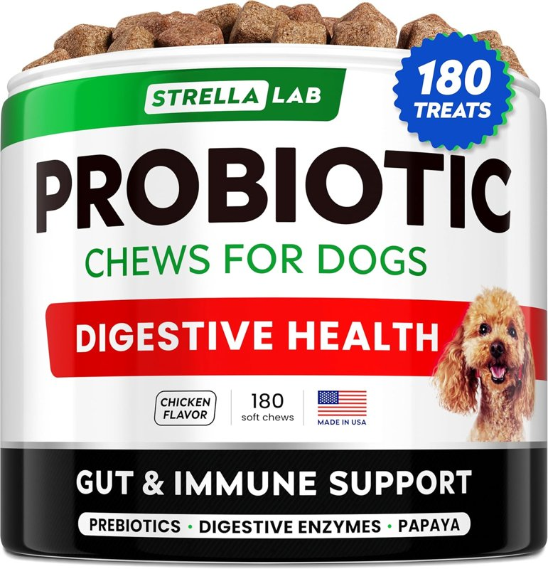

Everyday care for the dogs who give us love and joy.
Products our family uses with our three senior dogs. Personal observations, shared with care.

DIGESTIVE ROUTINE
STRELLALAB Probiotic Chews for Dogs
Chicken flavor · 180 soft chews. Made in the USA, according to the package.
J’s experience · Our family’s observations
My wife buys these for our three dogs over ten. While using them, we’ve noticed they seem more comfortable in their stomachs, happier, and more active. Our 15-year-old girl still runs around like a puppy sometimes. Those are our observations, and they’re why we keep using these chews. Every dog is different.
Before choosing for your dog
Check ingredients, expiration date, storage instructions and feeding directions for your dog’s weight. Ask your veterinarian whether this formula fits your dog’s needs.
Hip & joint supplement labeled with glucosamine, chondroitin, MSM and omega-3.
J’s experience · Our family’s observations
We use this with our three senior dogs. We’ve noticed a difference in how they move around. They still have harder days, but we feel this fits into our care routine. We care about helping them enjoy their days comfortably—that’s why we put thought into their care.
Before choosing for your dog
Ask your veterinarian about joint comfort and which care options suit your dog. Changes in movement deserve attention, and this review is not a promise of pain relief.